Сервис предзаказа: гость выбирает блюда и точное время получения, кухня готовит к этому времени, а не к моменту, когда гость встал в очередь.
Проблема
Гость тратит время дважды, кухня работает вслепую. В час пик пропускная способность упирается в очередь, а не в плиту.
Обеденный перерыв один, и он короткий. Половина уходит на очередь и ожидание, а не на еду и отдых.
Кухня не знает заранее, сколько людей придёт и когда. Остаётся готовить впрок и терять в качестве — либо держать гостя в ожидании.
Решение
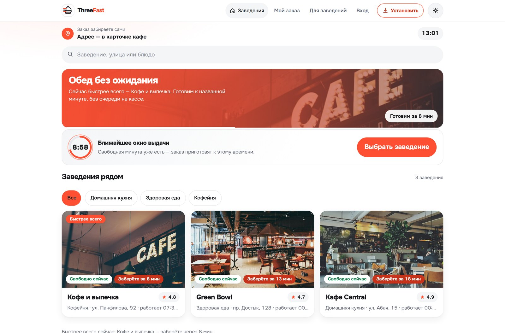
Целевая аудитория
В демо — три разные точки: домашняя кухня, здоровая еда и кофейня. Каждая со своим меню, часами и вместимостью кухни.
Продукт · путь гостя
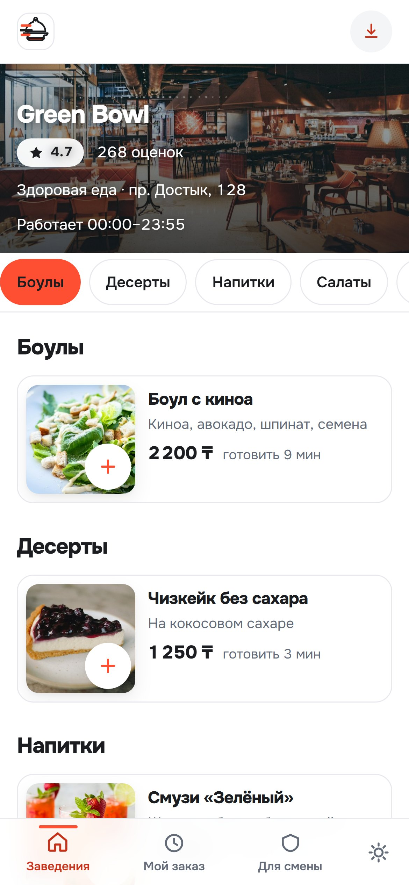
1. МенюФото, цена и время приготовления
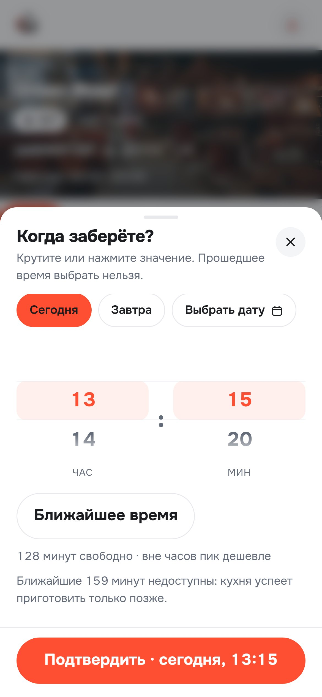
2. МинутаТолько выполнимые слоты: занятые недоступны
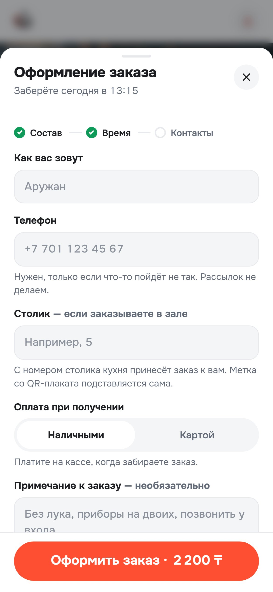
3. ОформлениеИмя, телефон, столик — и всё
Продукт · панель кухни
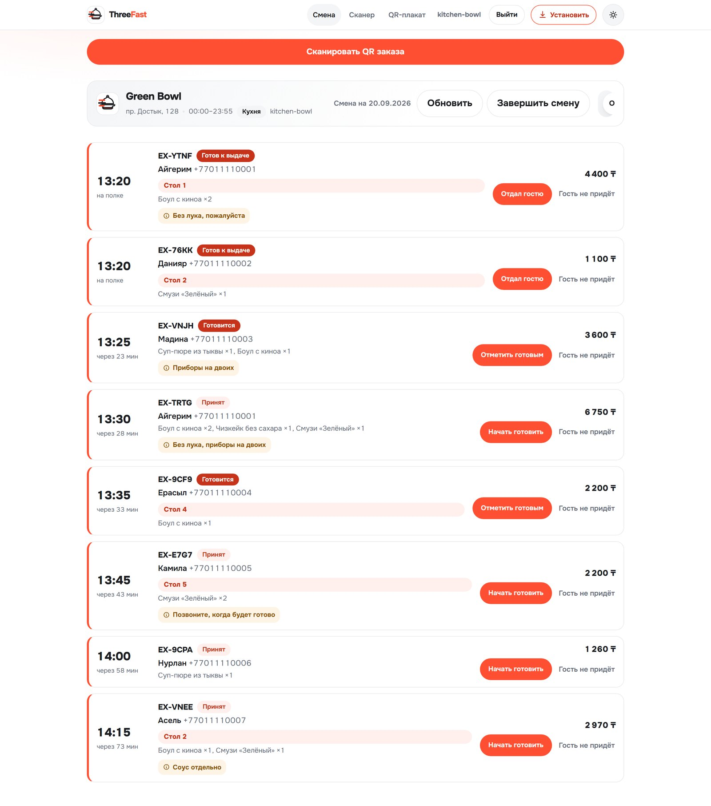
Каждый талон окрашен тем же тоном, что и экран гостя: акцент — принят, янтарь — в работе, зелёный — готов. Тон задаётся одним свойством модели, поэтому новый статус не требует правок в вёрстке.
Продукт · выдача
Гость показывает QR-код заказа со телефона, кассир наводит камеру: состав, столик и сумма уже на экране.
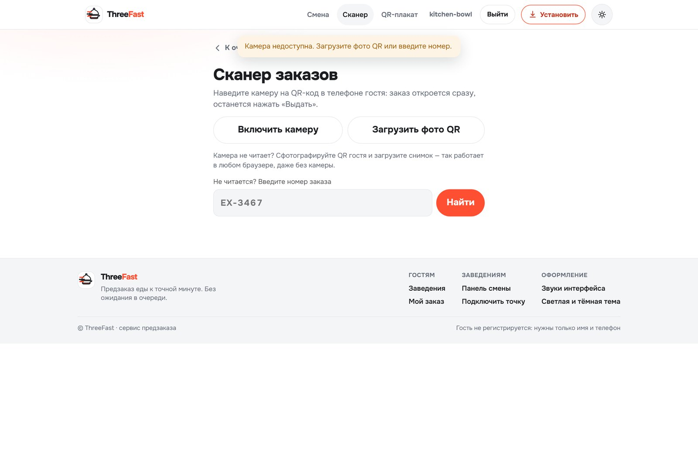
СканерКамера, фото QR или номер вручную
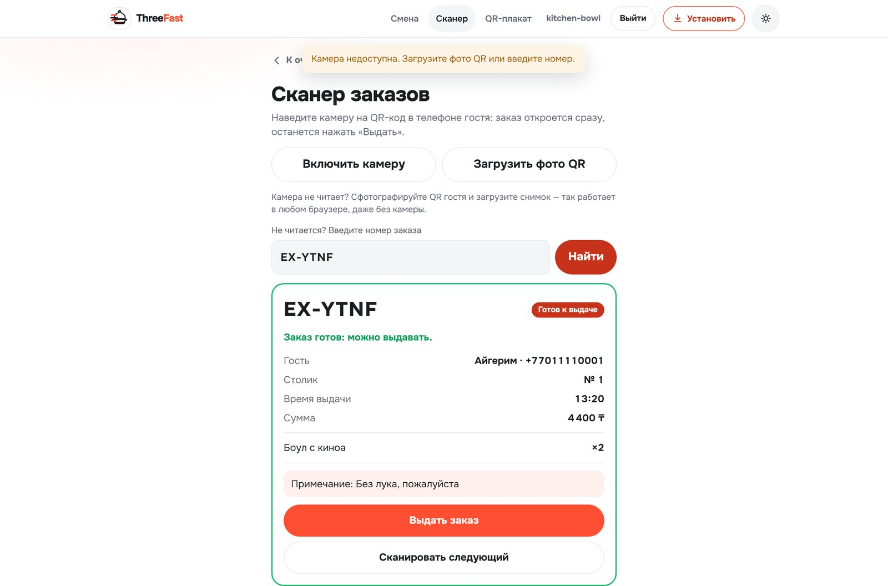
Карточка заказаСтолик, состав и кнопка «Выдать заказ»
Читает коды и в Chrome, и в Safari; если камера недоступна — распознаёт фотографию или принимает номер руками. Выдача — одно нажатие вместо поиска в списке.
Продукт · гость следит за заказом
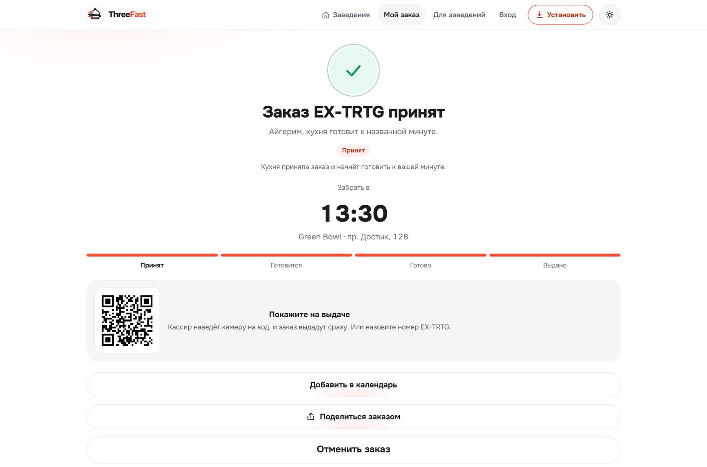
ПринятГалочка и номер заказа
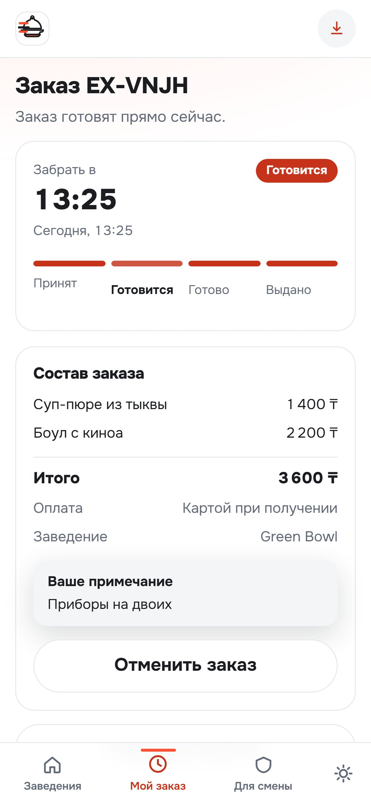
ГотовитсяШкала двигается без перезагрузки
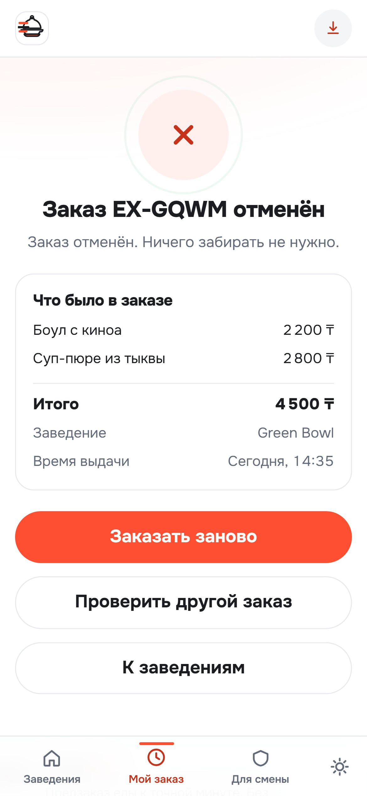
ОтменёнКрестик, состав и «Заказать заново»
Продукт · роли и управление
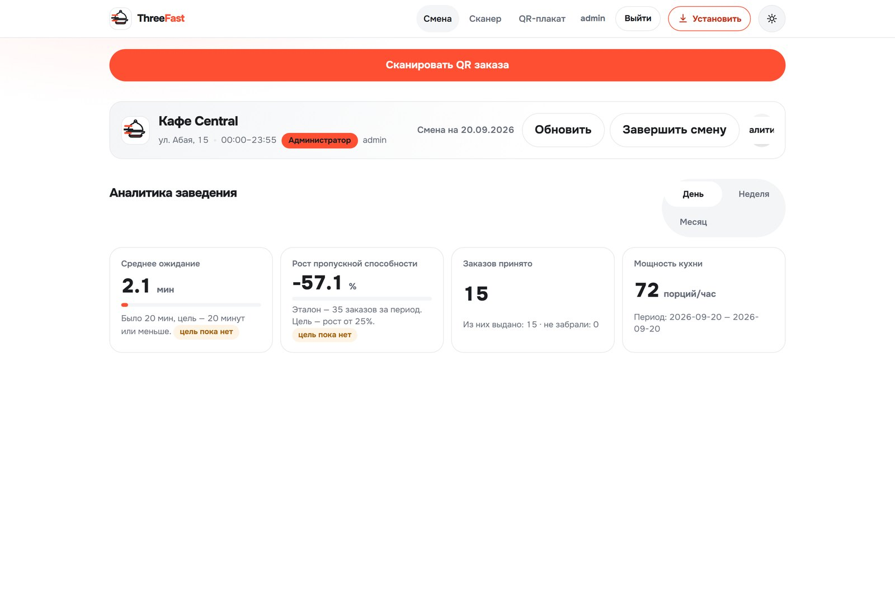
Администратор точкиМеню, часы, вместимость кухни и два критерия кейса
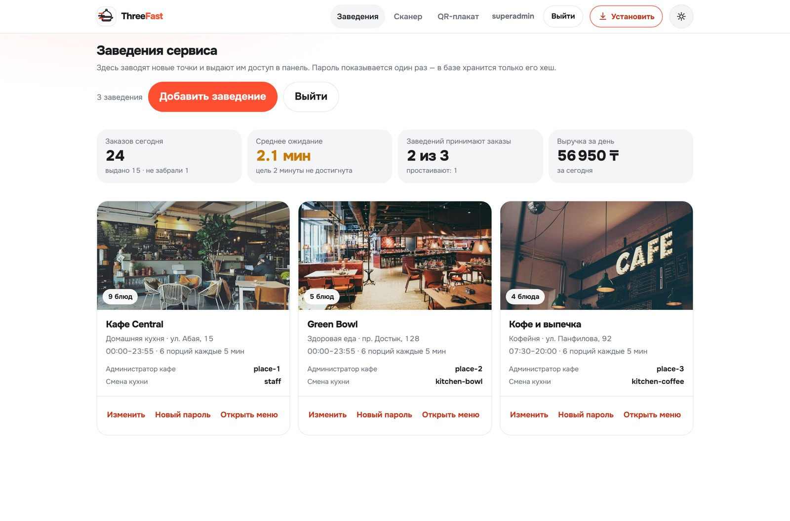
Администратор сервисаЗаводит точки и выдаёт им доступ
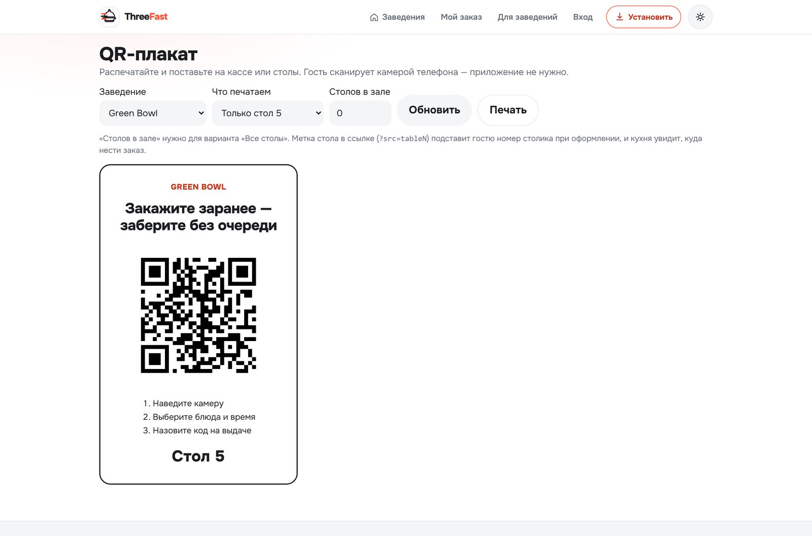
QR-плакатЛюбое заведение, любой столик
Печать плаката — часть продукта: метка стола в ссылке подставляет гостю номер столика при оформлении, и кухня сразу знает, куда нести заказ.
Конкуренты и преимущества
| Агрегаторы доставки | Кассовые системы | ThreeFast | |
|---|---|---|---|
| Задача | привезти курьером | учёт, касса, склад | забрать самому к минуте |
| Деньги с заведения | комиссия с каждого заказа | внедрение и оплата за рабочее место | подписка, комиссии нет |
| Запуск | подключение к платформе | интеграция с кассой | полчаса, без кассы |
| Гостю | нужно приложение | нужно приложение | сайт по QR, без установки |
| Время получения | как получится | не управляет | выбирает гость, минута в минуту |
Третья альтернатива — звонки и бумажная очередь. Конкурента тут нет, есть привычка, которую мы и меняем.
Экономика · расходы
| Разработка MVP | ≈ 500 часов · 17 000 строк кода и 8 000 строк тестов |
| Живые деньги на разработку | 0 — работа команды |
| Инфраструктура на старте | 0 — бесплатный тариф облака |
| Боевой режим | $15–20 в месяц: сервер и база, плюс домен |
| Подключение заведения | ≈ 30 минут: меню, часы, вместимость, печать QR |
| Интеграция с кассой | не требуется |
Проект не зависит от внешних платных сервисов: QR рисуется в браузере, сканер работает на своём коде, статика отдаётся самим приложением. Нет ни подписки на генератор кодов, ни CDN, ни платёжного шлюза.
Сервер один на всех заведений: при сети из 30 точек инфраструктура — меньше 1 000 ₸ на точку в месяц.
Оценка по факту разработки и текущим тарифам хостинга.
Экономика · модель дохода
подписка заведения в месяц, комиссии нет
средний чек в демо-меню
заказа в день стоит подписка
себестоимость точки при сети в 30 заведений
Столько стоит подписка. Всё, что сервис приносит сверх этого — маржа заведения: возвращённые гости, ровная загрузка кухни, разгруженная касса.
Масштабируемость
Страна и часовой пояс — параметр конфигурации, а не правка кода: сервис уже развёрнут с часовым поясом Алматы.
А подготовить её к моменту, когда он придёт.
Спасибо за внимание. Готовы ответить на вопросы.
Наведите камеру — откроется живой сервис